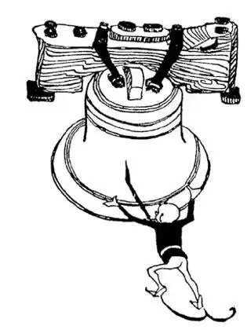
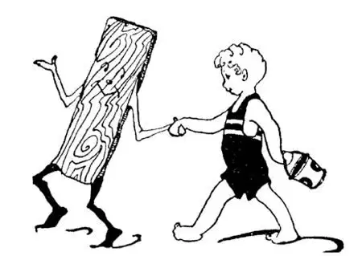

07
Mary’s Land, Virginia’s State, and Penn’s Woods
玛丽的领地、弗吉尼亚的领土和佩恩的森林

DID you ever trade a top for some marbles or an apple for an orange? Long before there was any Washington or any United States there used to be trader Indians living on the shores of the river that flows by Washington. These Indians paddled their canoes up and down the river and traded with other Indians, swapping things they had for things they wanted—beads for furs, bows for arrows, corn for potatoes. In the Indian language the name for Traders was Potomac, so we call the river after these trader Indians, the Potomac River. The Potomac separates two States with girls’ names: Maryland and Virgina. They are named after two queens. The Potomac Indians paddled their canoes down the river till they came to a much broader piece of water. This piece of water was so big it seemed to them like the ocean, and they called it “the Mother of Waters,” which in their own language was “Chesapeake.” You can see it on the map. Chesapeake Bay is not the ocean, but it is the biggest bay in the United States.
Did you ever eat snails or terrapin or frogs’ legs? Some people like them. The Indians found oysters growing in the Chesapeake Bay. At first no one thought of eating oysters—they didn’t look good to eat. But one day an Indian who was very hungry broke an oyster-shell open and ate the oyster inside. It tasted good and it didn’t hurt him, so others began to eat oysters, and now almost every one likes oysters, either raw or cooked. Oysters grow in other parts of the World too, but many people say that those in the Chesapeake Bay are the largest and best, but they are not supposed to be good unless they are eaten during the eight months that have an R in their names. They are good in MaRch but not in June.
Near “the Mother of Waters” are two cities. One is named Annapolis. The other is named Baltimore. Annapolis means Anna’s City, and it too was named after a queen. That makes three places—Anna’s City, Mary’s Land, and Virginia’s State—named after queens. Annapolis is the capital of the State of Maryland, just as Washington is the capital of all the States. At Annapolis the United States has a school for teaching boys to be sailors and fit to fight the sea battles of the United States if the country should ever have any. This school is called the Naval Academy. Some of the best boys chosen from each State in the United States go to Annapolis. They study all about boats and fighting and about geography; they visit other countries and learn to command ships.
Baltimore is the largest city in Maryland. It was named after an English lord. The first railroad in our country started in Baltimore, and as it ran from Baltimore to the State of Ohio, it was called the Baltimore & Ohio, or the B. & O. for short. Baltimore is famous for the Johns Hopkins University and Hospital. Boys come from all over the World to study at the “Hopkins,” and people come from all over the World to be treated at the “Hopkins Hospital.”
A man named Penn once owned the State just north of Maryland. It was then all woods, so it was called Pennsylvania, which means Penn’s Woods. But ages before Penn’s Woods other woods were there—huge forests of trees and giant plants growing high and thick and fast. More ages passed and these forests died and became buried and mashed down under the ground and turned into black rock. More ages passed and men dug up this black rock, and by accident they found that unlike other rock this rock would burn. Of course it would burn, because, as we know now, it was really only hardened wood—which we call coal.
There are two kinds of coal. One is called hard and the other is called soft. Soft coal doesn’t mean soft like a cushion; it means it crumbles easily. Hard coal is the best; soft coal is dirtier and smokier, but is a great deal cheaper. Why is it that the best things almost always cost the most? In the eastern part of Pennsylvania the coal that comes out of the ground is hard ; in the western part it is soft .
Hundreds of thousands of men, called miners, work underneath the ground, where it is like night all day long, digging out the coal to run steam-engines and to heat our houses. They have been digging away for years and years, so that there are huge hollow places underneath parts of Pennsylvania.
Coal is in layers underneath the ground and between layers of rock like the chocolate in a chocolate layer-cake. But there are also iron mines in Pennsylvania, and iron is not in layers; it is all mixed through the rock under the ground and is called ore. To get the iron out of the ore, men build huge fires under the ore and the iron melts and runs out, like water, into troughs which they make in the ground to catch it. When the iron cools, the blocks of iron are called “pigs”—perhaps because they are about the size of pigs—or perhaps because a pig goes into a trough.
To get iron out of iron ore you must have heat, and to have heat you must have something to make heat with, like coal. Some places have iron ore but no coal, and some places have coal but no iron. It is as if some boys who wanted to play baseball had a ball but no bat, and some other boys had a bat but no ball. But Pittsburgh, in the western part of Pennsylvania, had both iron and coal near-by. That is like boys who have both a bat and a ball.

The Liberty Bell is cracked
独立钟已破损了
From the ore they make iron, and from the iron they make steel, and from the steel they make rails for railroad tracks and beams for tall buildings and bridges to cross rivers.
A name that is in the Bible is the name of a city, Philadelphia. It means the City of Brotherly Love. This name was chosen to give to the largest city in Pennsylvania, in fact, the third largest city in all the United States, but I don’t know whether it suits or not. Philadelphia was the capital of the United States before there was any Washington, D. C., but now it isn’t even the capital of its own State. Here in an old building, called Independence Hall, is the bell that rang out the news when the United States was first made a country. It is now cracked, so will not ring any more, but is more treasured than any bell in the United States that can ring.

If you want to see a board
“walk,
” go to Atlantic City
如果你想享受这样一条人行道，就去大西洋城吧
The biggest bathtub in the World is not far from Philadelphia. It is an ocean bath called Atlantic City, on the coast of New Jersey. People from all over the World go there to take salt baths and sun baths and to be amused. There is a boardwalk miles long and as wide as a street close by the ocean, and along its side is every kind of thing to amuse you and your “stummick.” If you want to see a board “walk,” go to Atlantic City.
【中文阅读】
华盛顿或者美国诞生以前，就有一条河流经现在的华盛顿，河边住着很多印第安商人。这些印第安人划着独木舟，在河上来来往往，与其他印第安人做交易，用已有的东西去换需要的东西——珠子换毛皮，弓换箭，玉米换土豆。在印第安语中商人被叫做“波托马克”，于是我们现在就以这些印第安商人的名 字把这个河流称为波托马克河。波托马克河分隔开两个有女孩子名字的州，马里兰州和弗吉尼亚州。它们是以两位女王的名字命名的。波托马克的印第安人划着独木舟顺流而下，直至来到一片更开阔的水域。这片水域很大，他们觉得就像海一样宽广，于是他们管它叫“河之母”，用他们的语言说就是“切萨皮克”。这个地方地图上可以找得到。切萨皮克湾不是海洋，但却是美国最大的海湾。
你吃过蜗牛、水龟或青蛙腿吗？有些人喜欢吃。印第安人发现了生长在切萨皮克湾的牡蛎。最初没人想到吃牡蛎——因为那东西看起来不像是能吃的样子。但是有一天一个印第安人饥饿难耐，就敲开了一只牡蛎壳，吃了里面的肉。他觉得味道鲜美，也没有感到什么不舒服，于是其他人也开始吃牡蛎，现在几乎人人都喜欢吃牡蛎，无论是生吃还是烧熟了吃。世界上其他地方也有牡蛎，不过很多人说切萨皮克湾的牡蛎最大也最好吃，不过只有在有“R”字的八个月份里才好吃 [1] 。三月（“MaRch”）的牡蛎就很好吃，而六月（“June”）的就不好吃。
在“河之母”附近有两座城市。一个叫安纳波利斯，另一个叫巴尔的摩。安纳波利斯的意思是安娜之城，也是以一位女王的名字命名的。这样一共就有三个地方是以女王的名字命名的——安娜之城、玛丽的领地和弗吉尼亚的领土。安纳波利斯是马里兰州的首府，就像华盛顿是美国的首都一样。安纳波利斯有一所美国专门培养水兵的学校，万一美国发生战争，他们可以成为在海上作战的士兵。这所学校叫做海军军官学校。只有每个州挑选出来的最优秀的男孩子才会到安纳波利斯去学习。他们学习与舰船、作战以及和地理相关的知识；他们出访其他国家，学习指挥舰船的本领。
巴尔的摩是马里兰州最大的城市，它是以一位英国勋爵的名字命名的。美国的第一条铁路就开始于巴尔的摩，因为是从巴尔的摩通往俄亥俄州，所以这条铁路也叫做巴尔的摩—俄亥俄铁路，或者简称为巴俄线。巴尔的摩因有约翰 · 霍普金斯大学和约翰 · 霍普金斯医院而闻名。世界各地的许多孩子到霍普金斯大学学习，世界各地也有很多人到霍普金斯医院来看病。
一位名叫佩恩的男子曾经拥有马里兰州北面的那个州。当时那里森林密布，于是被叫做宾夕法尼亚，意思是佩恩的森林。早在佩恩的森林存在之前很多年 代，那里就长着大片的森林——高大浓密，各种树木和植物生长迅速。很多年代之后，这些森林死去，深埋地下，被压成碎块，渐渐变成了黑色的岩石。又过去许多年代，人们挖出了这些黑色的岩石，偶然间发现这些岩石和其他岩石不同之处是可以燃烧。这种岩石当然可以燃烧，因为我们现在都知道，其实那只是硬化的木头——我们叫它煤。
煤有两种。一种叫硬煤，一种叫软煤。软煤并不是说它像垫子一样柔软；而是说它容易破碎。硬煤是最好的，而软煤更污染环境，冒出的烟也更多，但比硬煤要便宜很多。为什么最好的东西总是价格最高呢？宾夕法尼亚东部产出的煤是硬煤，西部产出的是软煤。
成千上万叫做矿工的人，在地底下挖煤，那里从早到晚好像都是黑夜，他们挖出煤用以运转蒸汽机，给我们的房子供热。这些矿工们年复一年地挖掘煤矿使得现在宾夕法尼亚地下有些地方成了一个个大洞。
煤炭在地下是一层层分布在岩石之间，就像巧克力夹心蛋糕中的巧克力一样。但是在宾夕法尼亚还有铁矿藏，铁不是分层的，而是和地下的岩石混为一体，叫做矿石。为了把铁从矿石中提炼出来，人们生起大火，把矿石放在上面烧，铁熔化成铁水从矿石里流出来，流入地上的槽中，那是人们为接住铁水事先在地上挖好的。铁水冷却后形成的铁块叫“生铁” [2] ——也许是因为它们和猪的大小差不多，或者因为猪也到槽里吃食。
要把铁从矿石中提炼出来就得有热量，要有热量就得有像煤那样的东西来产生热量。有的地方有铁矿却没有煤炭，而有的地方有煤炭却没有铁矿。就好像有的男孩想打棒球却只有球没有球棒，而其他的孩子却只有球棒没有球。宾夕法尼亚西部的匹兹堡附近既有铁矿又有煤炭，就像有些男孩既有球棒又有球一样。
人们从矿石中提炼出了铁，将铁制成了钢，用钢造出铁路的铁轨、高楼的横梁和跨河的桥梁。
有座城市的名字是取自于《圣经》——非拉铁非（简称费城），意思是兄弟之爱的城市。费城是宾夕法尼亚最大的城市，也是美国第三大城市，但我不知道这合不合适。华盛顿特区成立之前，费城曾是美国的首都，但现在连自己本州的首府都不是了。费城有一座古老的建筑，名叫独立大厅，厅内有一口大钟，美国刚刚成立时，这口大钟响起，宣示了美国独立。现在钟已经破损了，再也 不能响了，但是却比美国任何一口能敲响的钟都要珍贵。
世界上最大的“浴缸”离费城不远。那是一个叫大西洋城的海洋浴场，位于新泽西州海岸。来自世界各地的人到那里去享受盐浴和日光浴，尽情玩乐。大西洋城海滨有一条几英里长的木板人行道，有街道那么宽，两旁有各种各样供你娱乐的东西，也有各种美食满足你的胃口。如果你想享受这样一条人行道，就去大西洋城吧。